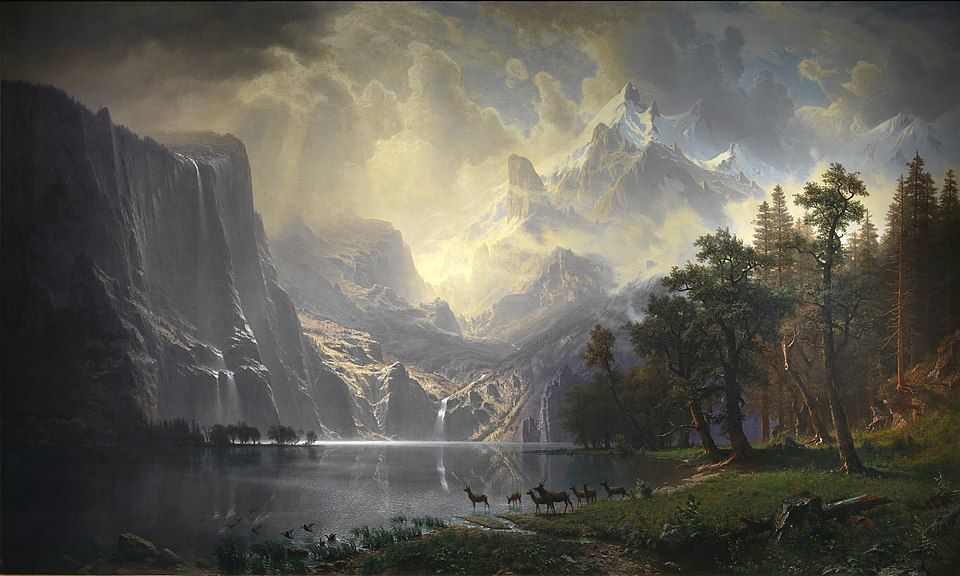

Pourquoi explore-t-on encore ?
Malgré leur naissance « trop tardive », beaucoup de personnes explorent encore la Terre, selon deux modalités auxquelles je peux penser :
- elles explorent des parties du monde qui sont
- encore inexplorées (!), telles que les mers (ce qui est en contradiction avec le dicton originel),
- dangereuses, tels que les pays en guerre ;
- elles explorent des parties du monde qui sont connues, mais qu’elles n’ont pas encore explorées elles-mêmes.
En suivant cette analogie de l’explorateur étendue, toute raison à l’exploration de parties du monde connues mais non explorées personnellement peut être donnée comme raison à l’exploration de l’esprit. L’extension de l’analogie résous également la critique ci-dessus, puisque la satisfaction d’être le premier à découvrir quelque chose n’est nécessairement pas une raison de l’exploration de parties du monde connues mais non explorées personnellement (puisqu’elles sont connues et déjà explorées en général). Par exemple, la satisfaction de la découverte est personnelle.
Qu’importe que je ne sois pas le premier à voir la vallée de Hudson
ou le massif central ? Je veux tout de même les voir et, ce faisant, en dériverai certainement une satisfaction personnelle.
|

Albert Bierstadt, Among the Sierra Nevada, California, 1868, Smithsonian American Art Museum, Washington, D.C.
|
 L'"enfant gnome" philosophe du jeu vidéo Runescape.
L'"enfant gnome" philosophe du jeu vidéo Runescape.

{kind=link}
{kind=link}